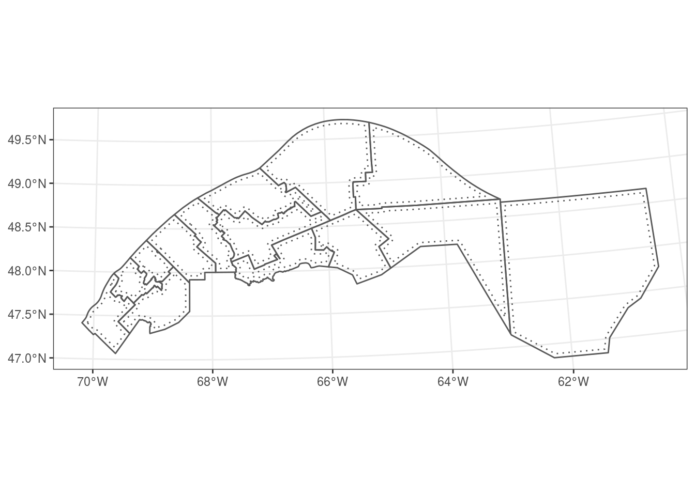
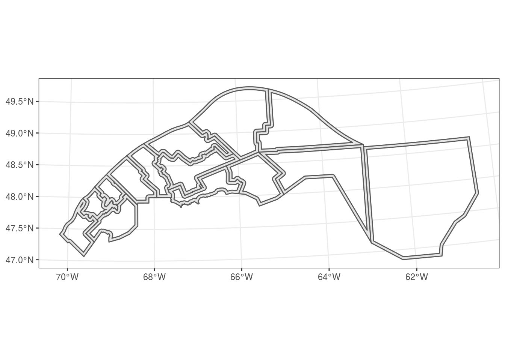

Introduction to geospatial data analysis in R
Philippe Marchand, Université du Québec en Abitibi-Témiscamingue
May 7, 2020
This workshop provides an overview of tools available in R for the analysis of geolocated data. This type of data is becoming increasingly common in various fields (e.g. aerial photos, satellite imagery, census data, geolocated posts on social networks, etc.). There are two broad categories of geospatial data:
- raster data represent variables defined at every point of a grid covering the full extent of the data (as in satellite images);
- vector data associate variables (sometimes also called attributes) to discrete geometrical objects located in space (such as the position of cities and highways on a road map).
At first, using programming commands to process geographical data can seem less intuitive, compared with the graphical user interface of GIS software. Here are a few advantages of scripted analyses:
- It is easy to repeat the analysis for new data by re-running the script.
- It is easy for other researchers to reproduce the methods if they have access to the same programming language.
- When using R specifically, the spatial data can be extracted and merged with other datasets for statistical analyses in a single programming environment.
Objectives
- Become familiar with R packages for processing and simple visualization of vector and raster data (the sf and stars packages, respectively).
- Perform common data transformation operations using functions from those packages.
- Create more complex static maps (with ggplot2) and interactive maps (with mapview).
Note on packages
The set of packages available for spatial analysis in R has evolved rapidly. A few years ago, the sp and raster packages were the main tools for vector and raster data processing, respectively. sf and stars are part of a recent initiative to overhaul R spatial tools (https://www.r-spatial.org/).
The sf package represents spatial data frames with a standard format based on open-source geodatabases, and integrates well with popular R packages for data manipulation and visualization (such as dplyr and ggplot2).
The stars package is also compatible with ggplot2 and provides good support for raster “cubes” with non-spatial dimensions such as time.
The raster package and its successor terra (released in 2020) have some features not present in stars and perform some operations faster. Therefore it can be useful to learn them if your workflow includes complex operations on large rasters; see the documentation at https://rspatial.org/ for more details.
Contents
- Explore a vector dataset
- Coordinate reference systems and transformations
- Customize maps with ggplot2
- Geometric operations on vector data
- Raster datasets
- Interactive maps with mapview
- Additional references
- Data sources
- Exercise solutions
Explore a vector dataset
All datasets used in this workshop can be found in the data folder. The mrc dataset contains information on Québec regional county municipalities (MRCs) in a ESRI shapefile format. Note that a single shapefile dataset is spread across multiple files, which share a name but differ in their file extension (mrc.dbf, mrc.prj, mrc.shp and mrc.shx).
To load this dataset in R, we call the st_read function from sf (all sf package functions start with the prefix st_, standing for spatiotemporal) and provide the path to the .shp file.
library(sf)
mrc <- st_read("data/mrc.shp")## Reading layer `mrc' from data source `/research-home/rblake/atelier_rgeo/data/mrc.shp' using driver `ESRI Shapefile'
## Simple feature collection with 104 features and 4 fields
## Geometry type: MULTIPOLYGON
## Dimension: XY
## Bounding box: xmin: -79.7625 ymin: 44.99136 xmax: -56.93495 ymax: 62.58217
## CRS: 4269The output text indicates the main properties of the loaded dataset, including the geometric type (MULTIPOLYGON), the spatial extent of the data (bbox) and the coordinate reference system (CRS) in use.
The bounding box and a detailed description of the CRS can be accessed separately using the st_bbox and st_crs functions:
st_bbox(mrc)## xmin ymin xmax ymax
## -79.76250 44.99136 -56.93495 62.58217st_crs(mrc)## Coordinate Reference System:
## User input: 4269
## wkt:
## GEOGCS["GCS_North_American_1983",
## DATUM["North_American_Datum_1983",
## SPHEROID["GRS_1980",6378137,298.257222101]],
## PRIMEM["Greenwich",0],
## UNIT["Degree",0.017453292519943295],
## AUTHORITY["EPSG","4269"]]We will discuss coordinate systems in the next section. For now, note that “Degree” under UNIT specifies that these are longitude and latitude coordinates expressed in decimal degrees.
Let us look at the first few rows of the data:
class(mrc)## [1] "sf" "data.frame"head(mrc)## Simple feature collection with 6 features and 4 fields
## Geometry type: MULTIPOLYGON
## Dimension: XY
## Bounding box: xmin: -79.51776 ymin: 45.44911 xmax: -63.31941 ymax: 62.58217
## CRS: 4269
## mrc_name reg_id reg_name pop2016
## 1 Abitibi 08 Abitibi-Temiscamingue 24707
## 2 Abitibi-Ouest 08 Abitibi-Temiscamingue 20582
## 3 Acton 16 Monteregie 15623
## 4 Administration regionale Kativik 10 Nord-du-Quebec 13343
## 5 Antoine-Labelle 15 Laurentides 35410
## 6 Argenteuil 15 Laurentides 32477
## geometry
## 1 MULTIPOLYGON (((-78.64359 4...
## 2 MULTIPOLYGON (((-79.51776 4...
## 3 MULTIPOLYGON (((-72.70415 4...
## 4 MULTIPOLYGON (((-77.82293 5...
## 5 MULTIPOLYGON (((-75.52133 4...
## 6 MULTIPOLYGON (((-74.71004 4...An sf object is a specialized data.frame where each line contains data associated with a geometry element (or simple feature, hence the package name), which is described in the geometry column. The most common feature types are:
- POINT: Coordinates (x, y) of a point.
- LINESTRING: Sequence of points connected by length segments.
- POLYGON: Sequence of points creating a closed simple polygon.
- MULTIPOINT, MULTILINESTRING ou MULTIPOLYGON: Dataset where each feature can be composed of multiple points, linestrings or polygons.
The plot function applied to an sf object creates a map for each field in the dataset.
plot(mrc)
To plot a single variable, you need to select the corresponding column. To show a map without data variables, you can select the geometry column. The axes = TRUE parameter tells R to show coordinate axes.
plot(mrc["geometry"], axes = TRUE)
You can select a subset of rows or columns of an sf object just like a regular data frame.
# Select the 5th row
mrc[5, ]## Simple feature collection with 1 feature and 4 fields
## Geometry type: MULTIPOLYGON
## Dimension: XY
## Bounding box: xmin: -76.14932 ymin: 45.95376 xmax: -74.34359 ymax: 47.76333
## CRS: 4269
## mrc_name reg_id reg_name pop2016 geometry
## 5 Antoine-Labelle 15 Laurentides 35410 MULTIPOLYGON (((-75.52133 4...# Select the MRC name and population columns for MRCs with a population over 200,000
mrc[mrc$pop2016 > 200000, c("mrc_name", "pop2016")] ## Simple feature collection with 5 features and 2 fields
## Geometry type: MULTIPOLYGON
## Dimension: XY
## Bounding box: xmin: -75.90834 ymin: 45.37075 xmax: -71.13162 ymax: 46.98186
## CRS: 4269
## mrc_name pop2016 geometry
## 23 Gatineau 278198 MULTIPOLYGON (((-75.89532 4...
## 47 Laval 425225 MULTIPOLYGON (((-73.74488 4...
## 69 Longueuil 417497 MULTIPOLYGON (((-73.44474 4...
## 82 Montreal 1959836 MULTIPOLYGON (((-73.49801 4...
## 89 Quebec 572755 MULTIPOLYGON (((-71.55293 4...Note that the column containing the spatial information (geometry) is always retained, even if not explicitly selected. To discard that column and convert the sf object to a regular (non-spatial) data frame, you can use the function st_drop_geometry.
Exercise 1
Select the MRCs in the Bas-St-Laurent (reg_id: 01) and Gaspesie (reg_id: 11) regions, then display their 2016 population on a map.
Hint: The operator %in% can check if a variable has one value within a set, for example x %in% c(1, 3) returns TRUE if x is equal to 1 or 3.
Integration with the dplyr package
The data manipulation functions from the dplyr package work on sf objects as well. For example, we could rewrite the example above (select the name and population of MRCs with populations over 200,000) using filter and select.
library(dplyr)
filter(mrc, pop2016 > 200000) %>%
select(mrc_name, pop2016)## Simple feature collection with 5 features and 2 fields
## Geometry type: MULTIPOLYGON
## Dimension: XY
## Bounding box: xmin: -75.90834 ymin: 45.37075 xmax: -71.13162 ymax: 46.98186
## CRS: 4269
## mrc_name pop2016 geometry
## 1 Gatineau 278198 MULTIPOLYGON (((-75.89532 4...
## 2 Laval 425225 MULTIPOLYGON (((-73.74488 4...
## 3 Longueuil 417497 MULTIPOLYGON (((-73.44474 4...
## 4 Montreal 1959836 MULTIPOLYGON (((-73.49801 4...
## 5 Quebec 572755 MULTIPOLYGON (((-71.55293 4...When performing a grouped summary, the individual features are also aggregated in a single feature by group. For example, let us aggregate the MRCs and their population by region.
regions <- group_by(mrc, reg_name) %>%
summarize(pop2016 = sum(pop2016))## although coordinates are longitude/latitude, st_union assumes that they are planar
## although coordinates are longitude/latitude, st_union assumes that they are planar
## although coordinates are longitude/latitude, st_union assumes that they are planar
## although coordinates are longitude/latitude, st_union assumes that they are planar
## although coordinates are longitude/latitude, st_union assumes that they are planar
## although coordinates are longitude/latitude, st_union assumes that they are planar
## although coordinates are longitude/latitude, st_union assumes that they are planar
## although coordinates are longitude/latitude, st_union assumes that they are planar
## although coordinates are longitude/latitude, st_union assumes that they are planar
## although coordinates are longitude/latitude, st_union assumes that they are planar
## although coordinates are longitude/latitude, st_union assumes that they are planar
## although coordinates are longitude/latitude, st_union assumes that they are planar
## although coordinates are longitude/latitude, st_union assumes that they are planar
## although coordinates are longitude/latitude, st_union assumes that they are planar
## although coordinates are longitude/latitude, st_union assumes that they are planar
## although coordinates are longitude/latitude, st_union assumes that they are planar
## although coordinates are longitude/latitude, st_union assumes that they are planarhead(regions)## Simple feature collection with 6 features and 2 fields
## Geometry type: GEOMETRY
## Dimension: XY
## Bounding box: xmin: -79.57933 ymin: 45.58943 xmax: -56.93495 ymax: 55.00006
## CRS: 4269
## # A tibble: 6 x 3
## reg_name pop2016 geometry
## <chr> <dbl> <GEOMETRY [°]>
## 1 Abitibi-Temisca… 147282 POLYGON ((-77.93147 47.27012, -77.93155 47.26624, -7…
## 2 Bas-Saint-Laure… 197806 POLYGON ((-68.38319 47.88014, -68.38314 47.83307, -6…
## 3 Capitale-Nation… 733898 POLYGON ((-70.69151 47.03311, -70.69453 47.02324, -7…
## 4 Centre-du-Quebec 243354 POLYGON ((-72.09283 45.79699, -72.11938 45.77338, -7…
## 5 Chaudiere-Appal… 421993 POLYGON ((-70.2784 46.05675, -70.2784 46.05608, -70.…
## 6 Cote-Nord 92712 MULTIPOLYGON (((-66.25978 55.00001, -66.25001 55, -6…plot(regions["pop2016"])
Create a spatial object from a data frame
The plots_rgeo.csv file contains data from forest inventory plots of the Québec Department of Forests, Wildlife and Parks (MFFP), including the plot ID, latitude and longitude, survey date, cover type (deciduous, mixed or coniferous) and canopy height class.
plots <- read.csv("data/plots_rgeo.csv")
head(plots)## plot_id lat long surv_date cover_type height_cls
## 1 99100101 45.35944 -72.89580 2012-11-12 Deciduous 17-22 m
## 2 99100102 45.36267 -72.89244 2012-09-08 Deciduous >22 m
## 3 99100201 45.49196 -71.16727 2008-09-11 Deciduous 17-22 m
## 4 99100202 45.49068 -71.16180 2008-09-11 Deciduous 17-22 m
## 5 99100301 45.47711 -72.58792 2012-08-30 Deciduous >22 m
## 6 99100302 45.47969 -72.58448 2012-08-30 Deciduous >22 mWe can convert this data to an sf object with st_as_sf. The coords argument specifies which columns hold the X and Y coordinates, while the crs argument defines the coordinate reference system (here, it is set to the same CRS as the MRC dataset).
plots <- st_as_sf(plots, coords = c("long", "lat"), crs = st_crs(mrc))
plot(plots["geometry"])Review
- Spatial vector data associate data fields to localized geometric features such as points, lines and polygons. The sf package can be used to work with those datasets in R.
- To read a vector dataset:
st_read. - To convert a regular
data.frameinto a spatial object:st_as_sf. - All basic
data.frameoperations, as well as dplyr package operations, also apply tosfobjects. - The
plotfunction applied to ansfobject displays one or many data fields on a map.
Coordinate reference systems and transformations
Until now, we worked with data using a geographic coordinate system, with positions described as degrees of longitude and latitude. Those coordinates are based on a model that approximates the irregular surface of the Earth’s mean sea level (the geoid) as an ellipsoid (a slightly flattened sphere). That model is specified as a datum in the CRS description. The mrc shapefile uses the NAD83 (North American) datum, whereas many world maps are based on the WGS84 datum.
st_crs(mrc)## Coordinate Reference System:
## User input: 4269
## wkt:
## GEOGCS["GCS_North_American_1983",
## DATUM["North_American_Datum_1983",
## SPHEROID["GRS_1980",6378137,298.257222101]],
## PRIMEM["Greenwich",0],
## UNIT["Degree",0.017453292519943295],
## AUTHORITY["EPSG","4269"]]A projection converts geographical coordinates in cartesian or rectangular (X, Y) coordinates. Since it is impossible to provide an exact representation of a curved surface on a plane, specialized projections were developed for different regions of the world and different analytical applications.
For example, the images below show how identical circular areas appear at different points of the Earth under a Mercator projection (which preserves shapes) and a Lambert equal-area projection (which preserves areas).


We will convert the mrc polygons into a Lambert conical conformal projection centered on Quebec (EPSG:6622), using st_transform.
mrc_proj <- st_transform(mrc, crs = 6622)
st_crs(mrc_proj)## Coordinate Reference System:
## User input: EPSG:6622
## wkt:
## PROJCS["NAD83(CSRS) / Quebec Lambert",
## GEOGCS["NAD83(CSRS)",
## DATUM["NAD83_Canadian_Spatial_Reference_System",
## SPHEROID["GRS 1980",6378137,298.257222101,
## AUTHORITY["EPSG","7019"]],
## TOWGS84[0,0,0,0,0,0,0],
## AUTHORITY["EPSG","6140"]],
## PRIMEM["Greenwich",0,
## AUTHORITY["EPSG","8901"]],
## UNIT["degree",0.0174532925199433,
## AUTHORITY["EPSG","9122"]],
## AUTHORITY["EPSG","4617"]],
## PROJECTION["Lambert_Conformal_Conic_2SP"],
## PARAMETER["standard_parallel_1",60],
## PARAMETER["standard_parallel_2",46],
## PARAMETER["latitude_of_origin",44],
## PARAMETER["central_meridian",-68.5],
## PARAMETER["false_easting",0],
## PARAMETER["false_northing",0],
## UNIT["metre",1,
## AUTHORITY["EPSG","9001"]],
## AXIS["X",EAST],
## AXIS["Y",NORTH],
## AUTHORITY["EPSG","6622"]]EPSG codes are useful to quickly specify a projection. The detailed description includes the type of projection (Lambert conformal conic), additional parameters of the projection, as well as the units (metres) for the projected data. The coordinates in metres are relative to a point of origin specified in the projection parameters (latitude_of_origin and central_meridian).
plot(mrc_proj["geometry"], axes = TRUE)
To create a map with latitude and longitude lines superposed on projected data, we can specify a geographical coordinate system (here, based on the original data) to the graticule argument:
plot(mrc_proj["geometry"], axes = TRUE, graticule = st_crs(mrc))
It is important to always use st_transform to convert datasets between different coordinate systems. A common error consists in modifying the coordinate system of a dataset (for example, with st_crs) without transforming the data themselves.
Review
- Geographic coordinate systems are based on a datum (model of the Earth’s shape) and describe the position in terms of spherical coordinates (longitude, latitude) measured in degrees.
- Projected coordinate systems convert spherical coordinates into rectangular coordinates (x, y) measured in a unit of length such as metres.
st_crsreturns the coordinate system of ansfobject;st_transformconverts the data from one coordinate system to another.
Customize maps with ggplot2
While the plot function is useful to get an overview of a spatial dataset, other packages provide more customization options to create publication-quality maps. In this section, we will see how a widely-used R graphics package, ggplot2, also supports mapping of spatial datasets.
For those not familiar with ggplot2, a comprehensive introduction can be found in the Data Visualisation chapter of R for Data Science by Wickham and Grolemund. Producing any type of graph with ggplot2 requires a similar sequence of steps:
- Specify the dataset as well as aesthetic mappings (
aes), which associate variables in the data to graphical elements (x and y axes, color or size scale, etc.); - Add
geom_layers, which specify the type of graph; - Optionally, specify additional customization options such as axis names and limits, color themes, and more.
For example, the following code creates a bar plot (geom_bar) from the forest inventory plots data (data = plots), showing the number of forest plots by height class (x axis) and by cover type (different fill colors of the bars). The labs function defines custom labels for the title, axes and legend.
library(ggplot2)
ggplot(data = plots, aes(x = height_cls, fill = cover_type)) +
geom_bar() +
labs(title = "Forest inventory plots", x = "Height class",
y = "Count", fill = "Cover type")When plotting a vector dataset from an sf object, we use the geom_sf layer to display the spatial features on a map. It is not necessary to specify x and y mappings in aes, since these are defined by the sf object itself. The graticule lines are also automatically drawn.
ggplot(data = mrc_proj) +
geom_sf()
To add multiple spatial layers to the same map, we simply add more geom_sf layers, which can be based on different datasets (specifying the data argument in each geom). In the code below, we add a point layer for the forest inventory plots, assigning the color aesthetic to cover type. We also use theme_set(theme_bw()) to change from the default grey theme to the black and white theme in all future plots.
theme_set(theme_bw())
ggplot() +
geom_sf(data = mrc_proj) +
geom_sf(data = plots, aes(color = cover_type), size = 1)
When a graphical element is set to a constant outside of the aes function, it is applied to the whole layer; therefore size = 1 means that all points will be of size 1.
Notice that the two spatial datasets plotted above use different CRS:
st_crs(mrc_proj)## Coordinate Reference System:
## User input: EPSG:6622
## wkt:
## PROJCS["NAD83(CSRS) / Quebec Lambert",
## GEOGCS["NAD83(CSRS)",
## DATUM["NAD83_Canadian_Spatial_Reference_System",
## SPHEROID["GRS 1980",6378137,298.257222101,
## AUTHORITY["EPSG","7019"]],
## TOWGS84[0,0,0,0,0,0,0],
## AUTHORITY["EPSG","6140"]],
## PRIMEM["Greenwich",0,
## AUTHORITY["EPSG","8901"]],
## UNIT["degree",0.0174532925199433,
## AUTHORITY["EPSG","9122"]],
## AUTHORITY["EPSG","4617"]],
## PROJECTION["Lambert_Conformal_Conic_2SP"],
## PARAMETER["standard_parallel_1",60],
## PARAMETER["standard_parallel_2",46],
## PARAMETER["latitude_of_origin",44],
## PARAMETER["central_meridian",-68.5],
## PARAMETER["false_easting",0],
## PARAMETER["false_northing",0],
## UNIT["metre",1,
## AUTHORITY["EPSG","9001"]],
## AXIS["X",EAST],
## AXIS["Y",NORTH],
## AUTHORITY["EPSG","6622"]]st_crs(plots)## Coordinate Reference System:
## User input: 4269
## wkt:
## GEOGCS["GCS_North_American_1983",
## DATUM["North_American_Datum_1983",
## SPHEROID["GRS_1980",6378137,298.257222101]],
## PRIMEM["Greenwich",0],
## UNIT["Degree",0.017453292519943295],
## AUTHORITY["EPSG","4269"]]In this case, ggplot2 automatically transforms all layers to the same CRS before plotting; by default, it is the CRS of the first dataset, but a different CRS can be specified with the coord_sf function.
ggplot(data = plots) +
geom_sf() +
coord_sf(crs = 6622)
In addition, coord_sf can be used to set coordinate axis limits and zoom in a portion of the map.
ggplot(data = regions) +
geom_sf(aes(fill = pop2016)) +
geom_sf_label(aes(label = reg_name)) +
coord_sf(xlim = c(-75, -70), ylim = c(45, 47))## Warning in st_point_on_surface.sfc(sf::st_zm(x)): st_point_on_surface may not
## give correct results for longitude/latitude dataThis last example introduced a new geom geom_sf_label, which adds a text label to each feature based on a value defined by the label aesthetic. The geom geom_sf_text works the same way, but does not draw a white box around the text label.
Review
- A ggplot2 graph starts with a call to the
ggplot()function, followed by specificgeomdefining each graph layer, followed by optional customization functions. - The
dataargument specifies the dataset to plot and theaesfunction associates variables in that dataset to graphical elements. These can be defined in theggplotfunction (if they apply to all layers) or in specificgeomlayers. - The
geom_sflayer plots ansfobject on a map. - The
geom_sf_textorgeom_sf_labellayers can be used to add textual data to each spatial feature on a map. - The
coord_sffunction defines axis limits and the CRS to use, transforming all spatial features to that CRS. By default, the CRS of the first plotted spatial dataset is used.
Other mapping packages
The tmap package (see this tutorial) is another option for producing maps in R. It was developed before ggplot2 supported sf objects and functions with a similar layering logic.
Geometric operations on vector data
The sf package includes a number of geometric operations for vector data, which are similar to those found in geodatabases or GIS software. These operations can be grouped into three classes:
- predicates, or tests which output TRUE or FALSE (e.g. is geometry A inside B?);
- measures, which produce a scalar quantity (e.g. length of a line, area of a polygon, distance between two geometries);
- geometry-generating functions which produce output geometries based on input (e.g. distance buffer around a point, centroid of a polygon, intersection of two lines or polygons).
In this workshop, we will present a few examples of each class. For a more detailed presentation, see Chapter 5 of the Spatial Data Science book listed in the additional references.
First, we use st_area to calculate the area of each MRC in the original dataset.
areas <- st_area(mrc)
head(areas)## Units: [m^2]
## [1] 7940855145 3630423258 582240572 513075556996 16304017180
## [6] 1335860444Note that the answer is in square metres, even though mrc uses geographical coordinates. Three measure functions: st_area, st_length and st_distance implement geodetic measures which take into account the curvature of the Earth. This is not the case for other operations, as we will see below.
To make it easier to read the results, we can convert them to a different unit.
units(areas) <- "km^2"
head(areas)## Units: [km^2]
## [1] 7940.8551 3630.4233 582.2406 513075.5570 16304.0172 1335.8604As an example of a spatial predicate, let us now find where the points in plots and the polygons in mrc intersect, i.e. which individual features have points in common.
inters <- st_intersects(plots, mrc)## although coordinates are longitude/latitude, st_intersects assumes that they are planar
## although coordinates are longitude/latitude, st_intersects assumes that they are planarinters[1:3] # look at the first 3 elements in the output## [[1]]
## [1] 94
##
## [[2]]
## [1] 94
##
## [[3]]
## [1] 53When comparing two spatial objects with a predicate like st_intersects, the result is a list of the same length as the first object (here, plots). Each element of that list contains the indices of the features in the second object for which the predicate is true. In this example, the first list element ([[1]]) indicates that plot 1 intersects with MRC 94, the third element indicates that plot 3 intersects with MRC 53, etc. Here each plot intersects with a single MRC, but in general an element of the intersection could be empty (if that feature in the first object has no intersection with the second object) or contain many indices (if that feature overlaps with multiple ones in object 2).
The warning text:
“although coordinates are longitude/latitude, st_intersects assumes that they are planar”,
indicates that this function treats geographical coordinates as if they were X-Y coordinates on a plane. In particular, the boundaries of a polygon are not the shortest lines between its vertices, since they ignore the curvature of the Earth. The difference is usually minor unless the line segments are very long, if they are near a pole or the international date line (where longitude jumps from -180 to 180 degrees).
From the results of st_intersects above, we could look up the indices to find the name of the MRC in which each inventory plot is located. Fortunately, there is a spatial join function st_join that automates this process, by appending to one sf object the data fields from a second sf object where the features intersect.
plots_mrc <- st_join(plots, mrc)## although coordinates are longitude/latitude, st_intersects assumes that they are planar
## although coordinates are longitude/latitude, st_intersects assumes that they are planarhead(plots_mrc)## Simple feature collection with 6 features and 8 fields
## Geometry type: POINT
## Dimension: XY
## Bounding box: xmin: -72.8958 ymin: 45.35944 xmax: -71.1618 ymax: 45.49196
## CRS: 4269
## plot_id surv_date cover_type height_cls mrc_name reg_id
## 1 99100101 2012-11-12 Deciduous 17-22 m Rouville 16
## 2 99100102 2012-09-08 Deciduous >22 m Rouville 16
## 3 99100201 2008-09-11 Deciduous 17-22 m Le Haut-Saint-Francois 05
## 4 99100202 2008-09-11 Deciduous 17-22 m Le Haut-Saint-Francois 05
## 5 99100301 2012-08-30 Deciduous >22 m La Haute-Yamaska 16
## 6 99100302 2012-08-30 Deciduous >22 m La Haute-Yamaska 16
## reg_name pop2016 geometry
## 1 Monteregie 36724 POINT (-72.8958 45.35944)
## 2 Monteregie 36724 POINT (-72.89244 45.36267)
## 3 Estrie 22376 POINT (-71.16727 45.49196)
## 4 Estrie 22376 POINT (-71.1618 45.49068)
## 5 Monteregie 88683 POINT (-72.58792 45.47711)
## 6 Monteregie 88683 POINT (-72.58448 45.47969)By default, st_join performs a “left” join, meaning that it keeps all rows in the first dataset, and adds NA values to the extra fields when there is no match in the second dataset. We can see this by joining the plots data with the subset of MRC for regions 01 and 11 (see Exercise 1).
mrc_01_11 <- mrc[mrc$reg_id %in% c("01", "11"), ]
plots_01_11 <- st_join(plots, mrc_01_11)## although coordinates are longitude/latitude, st_intersects assumes that they are planar
## although coordinates are longitude/latitude, st_intersects assumes that they are planarhead(plots_01_11)## Simple feature collection with 6 features and 8 fields
## Geometry type: POINT
## Dimension: XY
## Bounding box: xmin: -72.8958 ymin: 45.35944 xmax: -71.1618 ymax: 45.49196
## CRS: 4269
## plot_id surv_date cover_type height_cls mrc_name reg_id reg_name pop2016
## 1 99100101 2012-11-12 Deciduous 17-22 m <NA> <NA> <NA> NA
## 2 99100102 2012-09-08 Deciduous >22 m <NA> <NA> <NA> NA
## 3 99100201 2008-09-11 Deciduous 17-22 m <NA> <NA> <NA> NA
## 4 99100202 2008-09-11 Deciduous 17-22 m <NA> <NA> <NA> NA
## 5 99100301 2012-08-30 Deciduous >22 m <NA> <NA> <NA> NA
## 6 99100302 2012-08-30 Deciduous >22 m <NA> <NA> <NA> NA
## geometry
## 1 POINT (-72.8958 45.35944)
## 2 POINT (-72.89244 45.36267)
## 3 POINT (-71.16727 45.49196)
## 4 POINT (-71.1618 45.49068)
## 5 POINT (-72.58792 45.47711)
## 6 POINT (-72.58448 45.47969)With the optional argument left = FALSE, we can keep only the plots located in the two target regions.
mrc_01_11 <- mrc[mrc$reg_id %in% c("01", "11"), ]
plots_01_11 <- st_join(plots, mrc_01_11, left = FALSE)## although coordinates are longitude/latitude, st_intersects assumes that they are planar
## although coordinates are longitude/latitude, st_intersects assumes that they are planarggplot() +
geom_sf(data = mrc_01_11) +
geom_sf(data = plots_01_11)Exercise 3
The shapefile data/tbe2016_gaspe.shp contains a map of areas defoliated by the spruce budworm in the Bas-St-Laurent and Gaspesie regions in 2016. The defoliation level is represented by an integer: 1 = Light, 2 = Moderate and 3 = Severe.
How many forest inventory plots in these regions are affected at each defoliation level? Hint: The
tablefunction could be useful to get counts of each value in a column.Plot the defoliated areas located in the MRC of Kamouraska, along with the MRC border.
Finally, we consider a few geometry-generating functions. The st_buffer function creates a buffer at a set distance from each geometry in an object. For example, we can define a 5 km radius around each point in plots_01_11. This function does not work with geographical coordinates (longitude and latitude), so we first project the plots in EPSG 6622. The buffer distance is set in the units of the CRS, in this case metres.
plots_proj <- st_transform(plots_01_11, crs = 6622)
plots_buffer <- st_buffer(plots_proj, dist = 5000)
ggplot() +
geom_sf(data = plots_buffer, linetype = "dotted", fill = NA) +
geom_sf(data = plots_proj)If the original feature is a polygon, a negative buffer distance creates a buffer inside the polygon.
mrc_01_11_proj <- st_transform(mrc_01_11, crs = 6622)
mrc_buffer <- st_buffer(mrc_01_11_proj, dist = -5000)
ggplot() +
geom_sf(data = mrc_buffer, linetype = "dotted", fill = NA) +
geom_sf(data = mrc_01_11_proj, fill = NA)
Next, we will see three functions based on set operations. If A and B are geometric features, their union is the area covered by A or B, their intersection is the area covered by both A and B, and the difference (A - B) is the area covered by A, but not B. In sf, these operations are implemented by st_union, st_intersection and st_difference.
If they are applied to two sf objects (each of them containing multiple features in a column), then the function calculates the union, intersection or difference between all possible pairs of one feature from A and one feature from B. When applied to a single sf object, the st_union function merges all features in that object.
In the following example, buffer_union is a single geometric object, a multipolygon that covers all areas included in the individual buffers. The variables, or attributes, associated with individual features are lost in the merge.
buffer_union <- st_union(mrc_buffer)
ggplot(buffer_union) +
geom_sf()
We then use st_difference to extract the 5km “edges” of the MRC polygons that are outside the combined buffer.
mrc_edge <- st_difference(mrc_01_11_proj, buffer_union)## Warning: attribute variables are assumed to be spatially constant throughout all
## geometriesggplot(mrc_edge) +
geom_sf()
Note that st_difference copies the data fields from the original datasets (here, only from mrc_01_11_proj, since buffer_union has no associated data). The warning (“attribute variables are assumed to be spatially constant”) reminds us that those variables might not match the new geometries. For example, the pop2016 variable in mrc_edge refers to the original MRC, not the portion extracted by st_difference.
Review
- The sf package includes measure functions for the area of polygons (
st_area), the length of a line (st_length) or the distance between pairs of geometric features (st_distance). Those functions work with either geographic (long, lat) or projected coordinate systems. - All other geometric operations in sf are based on planar geometry. They treat longitude and latitude as if they were perpendicular axes (x, y).
st_intersects(A, B)is an example of a spatial predicate: for each element in A, the function returns the indices of elements with B that intersect with it.st_join(A, B)takes ansfobject A and appends the data fields from a second object B for each case where the feature in A intersects with a feature in B. Contrary tost_intersectionbelow, the geometric features themselves do not change; the result retains the features from A.st_intersection(A, B)produces a dataset containing all regions where features in A and B overlap.st_difference(A, B)produces a dataset containing the set differences (portion of A not in B) for each pair of features in A and B.st_union(A, B)produces a dataset containing the unions (area covered by either A or B) for each pair of features in A and B. When given a singlesfobject as input,st_unionmerges all features from that object within a single one.st_bufferproduces new geometric features that buffer the input features by a given distance.
Raster datasets
The data folder contains a raster file covering sections 022B and 022C from the Canadian Digital Elevation Model or CDEM.
The CDEM is a raster dataset; the area of Canada is covered by a regular grid and the model associates an elevation value (in metres) to each pixel on that grid. This type of data is analogous to a digital image (rectangular array of pixels), to which metadata is added (resolution, spatial extent and coordinate system) so that each pixel can be associated to geographical coordinates.
The base resolution of the CDEM is 1/4800th of a degree and data are available in sections of 2 degrees of longitude by 1 degree of latitude. The data file we use in this workshop contains two sections (4 degrees of longitude by 1 degree of latitude), but was aggregated to a lower resolution (1/1200th of a degree, or 3 arc-seconds) to reduce processing time.
We first load the CDEM file, which is in the GeoTIFF raster format, with the read_stars function of the stars package (the name is an acronym for spatiotemporal arrays). This function associates the dataset to a stars object. Typing the object’s name at the command line shows a summary of the data and metadata.
library(stars)
cdem <- read_stars("data/cdem_022BC_3s.tif")
cdem## stars object with 2 dimensions and 1 attribute
## attribute(s), summary of first 1e+05 cells:
## cdem_022BC_3s.tif
## Min. : 2.0
## 1st Qu.: 2.0
## Median : 129.1
## Mean : 189.8
## 3rd Qu.: 328.8
## Max. :1179.4
## dimension(s):
## from to offset delta refsys point values x/y
## x 1 4801 -70.0001 0.000833333 GEOGCS["NAD83",DATUM["Nor... FALSE NULL [x]
## y 1 1201 49.0001 -0.000833333 GEOGCS["NAD83",DATUM["Nor... FALSE NULL [y]The CDEM data has one attribute (variable), the elevation, which ranges from 2 to 1179 m for this particular section. The dimensions table includes a row for each array dimension, here x and y. The from and to columns indicate the range of indices in each dimension (4801 cells in x by 1201 cells in y), the offset column contains the coordinates of the top-left corner of the raster (70 degrees West, 49 degrees North), the delta column indicates the size of each raster cell (1/1200 \(\approx\) 0.000833 degree), and the refsys column describes the coordinate reference system.
Notes
The negative delta for y means that latitude decreases from the top (north) to the bottom (south) of the raster.
While we limit ourselves to two-dimensional rasters in this workshop, one advantage of the stars package is that it easily incorporates additional dimensions beyond the two spatial dimensions, such as time or spectral band, which are common in remote sensing data.
We can also determine the extent and coordinate system of the object with the same methods we used for sf objects.
st_bbox(cdem)## xmin ymin xmax ymax
## -70.00010 47.99927 -65.99927 49.00010st_crs(cdem)## Coordinate Reference System:
## User input: GEOGCS["NAD83",DATUM["North_American_Datum_1983",SPHEROID["GRS 1980",6378137,298.2572221010042,AUTHORITY["EPSG","7019"]],TOWGS84[0,0,0,0,0,0,0],AUTHORITY["EPSG","6269"]],PRIMEM["Greenwich",0],UNIT["degree",0.0174532925199433],AUTHORITY["EPSG","4269"]]
## wkt:
## GEOGCS["NAD83",
## DATUM["North_American_Datum_1983",
## SPHEROID["GRS 1980",6378137,298.2572221010042,
## AUTHORITY["EPSG","7019"]],
## TOWGS84[0,0,0,0,0,0,0],
## AUTHORITY["EPSG","6269"]],
## PRIMEM["Greenwich",0],
## UNIT["degree",0.0174532925199433],
## AUTHORITY["EPSG","4269"]]We can extract the elevation values as a regular R array with cdem[[1]], which pulls the first (in this case the only) variable in the raster file. However, this removes the associated metadata.
elev <- cdem[[1]]
str(elev)## num [1:4801, 1:1201] 599 607 610 612 612 ...Plot a raster
The plot function creates a quick 2D image (or heat map) of the raster data.
plot(cdem)We can also display a stars object in ggplot2 with the geom_stars function. Because rasters can contain many more pixels than are visible at once on the screen, it is useful to apply a downsampling factor to speed up plotting. Here, downsample = 5 means that 1 of every 5 pixels is shown.
ggplot() +
geom_stars(data = cdem, downsample = 5) +
geom_sf(data = mrc_01_11, color = "white", fill = NA) +
scale_fill_viridis_c() +
coord_sf(xlim = c(-70, -66), ylim = c(48, 49))
The plot function above automatically downsampled the data according to the screen’s resolution.
Work with large raster files
For raster files that are too large to load in memory, you can use the proxy = TRUE argument in read_stars. In that case, R loads a stars_proxy object containing the metadata, but not the pixel values. All raster operations can be applied to stars_proxy objects as well, but the calculations are not actually performed until the result is plotted (in which case only a fraction of pixels are processed due to downsampling) or the object is saved to disk (with write_stars).
Raster operations
To crop a rectangular section of the raster, we can use the filter function from dplyr along one or multiple dimensions. For example, here is the portion of the raster east of 67 degrees West.
cdem_part <- filter(cdem, x > -67)
plot(cdem_part)
To crop a raster’s extent along the boundaries of a sf object, we use the st_crop function. The following code shows the elevation of points in the MRC of La Mitis. Note that we converted the polygon to the CRS of the raster prior to cropping.
mitis <- filter(mrc_01_11, mrc_name == "La Mitis")
mitis <- st_transform(mitis, st_crs(cdem))
cdem_mitis <- st_crop(cdem, mitis)## although coordinates are longitude/latitude, st_union assumes that they are planar## although coordinates are longitude/latitude, st_intersects assumes that they are planarplot(cdem_mitis)
Since stars objects are fundamentally arrays of values, we can apply mathematical operations to each pixel just like we would for a regular array in R.
# Convert elevation values to km
cdem_km <- cdem / 1000
plot(cdem_km)
# Display points above 500 m in elevation
cdem_500 <- cdem > 500
plot(cdem_500)Exercise 4
Show on a map where the elevation is between 5 and 100 m in the MRC of La Mitis.
What is the highest elevation in that MRC?
Extract values from raster at points
A common use of raster data is to extract values at points of interest. For example, we might want elevation values for each of the forest inventory plots in plots_01_11.
Since the stars package does not have a fast option for point extraction, we will use the raster package and its extract function.
library(raster)
cdem_r <- as(cdem, "Raster") # convert from stars to raster format
plots_elev <- extract(cdem_r, plots_01_11)
plots_01_11$elev <- plots_elev # save in a new column of the sf object
head(plots_01_11)## Simple feature collection with 6 features and 9 fields
## Geometry type: POINT
## Dimension: XY
## Bounding box: xmin: -67.02499 ymin: 48.36367 xmax: -64.41216 ymax: 48.52901
## CRS: 4269
## plot_id surv_date cover_type height_cls mrc_name reg_id
## 17 119600101 2016-06-16 Coniferous 17-22 m Bonaventure 11
## 18 119600102 2016-06-16 Coniferous 17-22 m Bonaventure 11
## 19 119600201 2015-06-03 Coniferous 12-17 m La Matapedia 01
## 20 119600202 2015-06-03 Coniferous 12-17 m La Matapedia 01
## 21 119600301 2016-06-15 Coniferous 12-17 m Le Rocher-Perce 11
## 22 119600302 2016-06-14 Coniferous 12-17 m Le Rocher-Perce 11
## reg_name pop2016 geometry elev
## 17 Gaspesie - Iles-de-la-Madeleine 17664 POINT (-65.43818 48.3653) NA
## 18 Gaspesie - Iles-de-la-Madeleine 17664 POINT (-65.43293 48.36367) NA
## 19 Bas-Saint-Laurent 17935 POINT (-67.02499 48.36973) 453.1875
## 20 Bas-Saint-Laurent 17935 POINT (-67.02246 48.37316) 435.1875
## 21 Gaspesie - Iles-de-la-Madeleine 17311 POINT (-64.41546 48.52901) NA
## 22 Gaspesie - Iles-de-la-Madeleine 17311 POINT (-64.41216 48.5262) NAReview
- A raster dataset associates a value to each pixel in a regular grid. The stars package allows us to process this type of data in R.
- The
read_starsfunction loads a raster file in R. For large files, specifyproxy = TRUEto avoid loading the full raster in memory. - The
starsobject can be plotted by itself withplot, or added to aggplotwithgeom_stars. filtercrops astarsobject along the specified dimensions, whereasst_cropcrops it within the boundaries of ansfobject.- Arithmetic (
+,-, etc.) and comparison operators (<,==, etc.) are applied to each pixel of thestarsobject. - The
extractfunction from the raster package extracts raster values at specific points specified by ansfobject.
Interactive maps with mapview
The mapview package provides visualizations of sf and raster layers on an interactive map (similar to Google Maps) with different basemap options (e.g. OpenStreetMap, OpenTopoMap, ESRI World Imagery). We simply call the mapview function with the name of the spatial dataset. Multiple layers can be overlaid with the + operator.
There are a few optional arguments to control the plotting of each type of object. In the example below, we use the zcol argument to select the variable by which to color the points in plots_01_11.
library(mapview)
mapview(cdem) +
mapview(plots_01_11, zcol = "cover_type")Exemple mapview
Additional references
Spatial Data Science, a free online textbook by Edzer Pebesma and Roger Bivand that covers the sf and stars packages in more detail, in addition to subsequent chapters on statistical modelling of spatial data.
Geocomputation with R (Lovelace, Nowosad and Muenchow) is another comprehensive free textbook for manipulating and analyzing spatial data.
The R-spatial blog presents news and tutorials on spatial packages in R. In particular, see this series (1, 2, 3) of posts by Mel Moreno and Mathieu Basille on mapping with ggplot2.
The RSpatial site (not to be confused with the previous one) includes tutorials for the raster and terra packages to work with raster data.
Data sources
This workshop uses public data made available by Québec and Canada government agencies. The script data_prep.R shows the detailed steps to produce the workshop data files from the original sources.
County regional municipality (CRM) boundaries were downloaded from the Québec Department of Energy and Natural Resources (MERN) and merged with population data from the Institut de la statistique du Québec. Column names were translated to English and diacritic marks (accents) were removed from all place names.
Data on forest inventory plots and spruce budworm defoliation maps from the Québec Department of Forests, Wildlife and Parks (MFFP) were downloaded from the Québec Open Data Portal. Some data fields were recoded and translated to English.
Canadian Digital Elevation Model rasters from Natural Resources Canada were downloaded from the Canada Open Data Portal. Two 2x1 degree sections were merged to use in this workshop.
Solutions
Exercise 1
Select the MRCs in the Bas-St-Laurent (reg_id: 01) and Gaspesie (reg_id: 11) regions, then display their 2016 population on a map.
mrc_01_11 <- mrc[mrc$reg_id %in% c("01", "11"), ]
plot(mrc_01_11["pop2016"], axes = TRUE)
Exercise 2
Create a map of the MRCs with different fill colors for each region.
ggplot(data = mrc_proj, aes(fill = reg_name)) +
geom_sf()
Exercise 3
- How many of the forest inventory plots in these regions are affected at each defoliation level?
defo <- st_read("data/tbe2016_gaspe.shp")## Reading layer `tbe2016_gaspe' from data source `/research-home/rblake/atelier_rgeo/data/tbe2016_gaspe.shp' using driver `ESRI Shapefile'
## Simple feature collection with 3928 features and 2 fields
## Geometry type: POLYGON
## Dimension: XY
## Bounding box: xmin: -69.88925 ymin: 47.38829 xmax: -64.66188 ymax: 49.25522
## CRS: 4269plots_defo <- st_join(plots_01_11, defo)## although coordinates are longitude/latitude, st_intersects assumes that they are planar
## although coordinates are longitude/latitude, st_intersects assumes that they are planartable(plots_defo$level)##
## 1 2 3
## 93 93 90- Plot the defoliated areas located in the MRC of Kamouraska by severity level, also displaying the MRC border.
mrc_kam <- filter(mrc_01_11, mrc_name == "Kamouraska")
defo_kam <- st_join(defo, mrc_kam, left = FALSE)## although coordinates are longitude/latitude, st_intersects assumes that they are planarggplot() +
geom_sf(data = mrc_kam) +
geom_sf(data = defo_kam, color = NA, aes(fill = level))Exercise 4
- Show on a map where the elevation is between 5 and 100 m in the MRC of La Mitis.
mitis <- filter(mrc_01_11, mrc_name == "La Mitis")
mitis <- st_transform(mitis, st_crs(cdem))
cdem_mitis <- st_crop(cdem, mitis)## although coordinates are longitude/latitude, st_union assumes that they are planar## although coordinates are longitude/latitude, st_intersects assumes that they are planarplot(cdem_mitis >= 5 & cdem_mitis <= 100)- What is the highest elevation in that MRC?
cdem_mitis_vals <- cdem_mitis[[1]]
max(cdem_mitis_vals, na.rm = TRUE)## [1] 794.4375